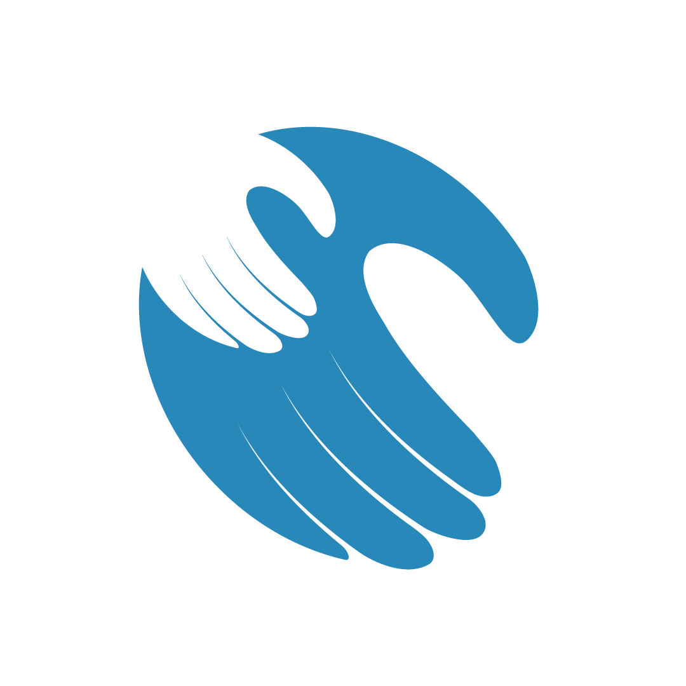

Vous voulez faire une bonne action mais vous n'avez ni le temps, ni les contacts, ni l'organisation pour préparer et distribuer des repas vous-même. Nous le faisons pour vous — et nous vous montrons le résultat.

Entreprise de services solidaires Paiement Mobile Money Preuve photo systématique Suivi de commande
Le même service qui se faisait jusqu'ici par appel ou WhatsApp, désormais accessible en trois étapes claires.
Un package prêt à l'emploi ou un budget libre — nous calculons automatiquement ce qu'il permet de faire.
Mobile Money ou carte, en un ou deux versements. Vous recevez une confirmation immédiate avec numéro de suivi.
Notre équipe terrain prépare et distribue, puis vous envoie photos ou vidéos de votre don réalisé.
Indiquez votre revenu horaire, nous calculons l'équivalent et le versons directement à une cagnotte en cours — Ramadan, rentrée scolaire, urgence climatique. Pas besoin de grand budget pour avoir un vrai impact.
Calculer mon heure🤝 128 personnes ont déjà donné leur heure ce mois-ci
« Je vis à Paris, mon père est décédé à Cotonou. Cuisine Caritative a organisé la distribution en mon nom le jour même de l'enterrement. J'ai reçu les photos avant même de me reconnecter à internet. »
« On a intégré Cuisine Caritative dans notre programme RSE annuel. Le rapport d'impact envoyé après chaque campagne facilite énormément notre communication interne. »
« Je n'ai jamais eu un gros budget à donner, mais mon heure de salaire chaque mois s'additionne à celle de 127 autres personnes. Ça change quelque chose de voir la barre de progression avancer. »
Rapport trimestriel public : sommes collectées, sommes dépensées, familles aidées.
Visages floutés sans autorisation, aucune image misérabiliste.
Familles identifiées avec des leaders de quartier, écoles et ONG locales.